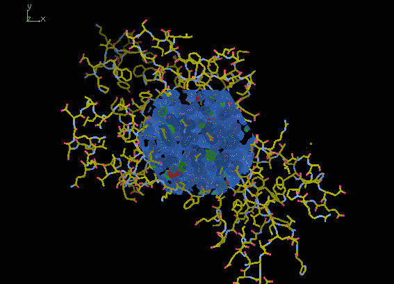

Coot Workshop
Protein Crystallography Summer School 2019
https://synergy.st-andrews.ac.uk/proteincrystallography
1st to 7th September 2019 (Programme)
University of York
1. Introduction
Coot is a program for macromolecular model building, model completion and validation (Emsley et al. 2010). This workshop will give step-by-step instructions on how to use Coot to complete a molecular replacement (MR) solution. The structure we are trying to build is 5EG2, a human SET7/9 mutant in complex with S-adenosyl-l-homocysteine (SAH) and a 10 residue transcription initiation factor (Fick et al. 2016). The data extend to 1.55 Å resolution and the A chain is small with only 262 residues.
As a homology model, we have chosen 1N6A. This is an older selenomethionine derivative of human SET7/9 solved at 1.7 Å resolution (Kwon et al. 2003). The model was processed using phaser.sculptor, which trims unaligned regions using a sequence alignment and truncates side chains that differ between the model and target. Pruning the MR model was not needed to find a solution in this case as it is so similar, but in general it is good practice. MR was done using phaser through the CCP4i2 Basic Molecular Replacement task. This was followed by csymmatch to move the MR solution to the same origin as the deposited structure and finally refinement using REFMAC. The following files produced by REFMAC are needed for the workshop:
- refined_model.mtz - reflection data in MTZ format
- refined_model.pdb - coordinates in PDB format
2. Starting
2.1. Starting Coot
Type coot on the command line.
The Coot window should appear.
For this to work, the coot executable should be in your path.
If it is not then you need to source one of the CCP4 setup scripts:
source ccp4-7.0/bin/ccp4.setup-csh # if shell is csh/tcsh
source ccp4-7.0/bin/ccp4.setup-sh # if shell is bashThe Coot window should look something like this:

At the top of the screen is the menu bar with File, Edit, Calculate etc. Below this is the main toolbar with a button to open the Display Manager. Buttons on the main toolbar can be customised by right clicking on the empty space. On the right is the refinement toolbar with the most widely used model building tools. At the bottom of the window is the status bar, which is used to display messages.
2.2. Opening Files
Files that you want to open in Coot can also be passed as command line arguments:
coot refined_model.pdb refined_mode.mtzFile / Open Coordinates
(you can also click the folder icon in the main toolbar).
A file browser will appear.
From this you can select a coordinate file,
as well choose how to recentre the view and the new molecule.
Select refined_model.pdb and click Open.
A window will appear asking you to fix nomenclature errors.
This is a common occurrence when opening coordinates and is usually because
there is an atom naming convention for symmetrical residues,
e.g. which way round CD1 and CD2 are in PHE, that most programs ignore.
Click Yes to fix them.
Now we will open the 2mFo-DFc and mFo-DFc maps.
Going to File / Auto Open MTZ
is equivalent to passing the MTZ on the command line
and will open both maps if it can work out which columns to use.
We will open the maps one at a time.
Choose File / Open MTZ, mmCIF, fcf or phs
to open the file browser.
Select refined_model.mtz and click Open.
The following window should appear:
This window allows you to select
which amplitude and phase columns to use for the new map.
Sensible defaults have been chosen for the 2mFo-DFc map.
In this case there is no need use weights
because the FWT,PHWT columns are already weighted.
If you click the Expert Mode? button
you can also choose resolution limits to truncate the data.
Click OK to open the 2mFo-DFc map.
Now we will open the mFo-DFc map.
Choose File / Open MTZ, mmCIF, fcf or phs again
and open refined_model.mtz.
Change the Amplitudes column to DELFWT
and the Phases column to PHDELWT.
The Is a Difference Map checkbox
needs to be checked (should happen automatically)
so that Coot will treat this as a difference map.
Click OK.
The maps should be visible as a sphere in the centre of the screen. By default, the 2mFo-DFc is coloured blue and the mFo-DFc (difference) map is coloured green for positive density and red for negative density.
3. Viewing
3.1. Controls
The following controls are used to change the view:
| Action | Result |
|---|---|
| Left-mouse drag | Rotate view |
| Ctrl left-mouse drag | Translate view |
| Right-mouse drag | Zoom |
| Ctrl right-mouse drag | Adjust clipping |
| Middle-mouse click | Centre on atom |
3.2. Virtual Trackball
By default, the rotation is done
using a virtual trackball with a spherical surface.
It depends not only on the direction you are dragging
but also where in the view the mouse pointer is.
If this feels strange you can try changing it
by going to Edit / Preferences,
selecting General on the left
and choosing the HID tab.
The Flat option will change the rotation
so that only the direction of dragging matters.

3.3. Display Manager
Open Display Manager from the main toolbar.
This shows lists of all the molecules and maps currently open.
You can toggle whether individual molecules and maps are displayed
and delete them if they are no longer needed.
You can also change map properties,
such as display style and contour levels,
and molecule representations.

3.4. Molecule Representations
The default representation for molecules is
Bonds (Colour by Atom),
which is a good representation for model building.
However, if we want to look at larger scale features of the model
the C-alphas/Backbone representation is useful.
For now, un-display both maps
and change the molecule representation to Jones' Rainbow.
This is a variation of the C-alpha representation
where the chain is coloured
from blue at the N-terminus to red at the C-terminus.
The dotted lines at the C-terminus
show us that there are missing residues there.
3.5. Symmetry & Packing
When checking if a molecular replacement solution is correct,
it is useful to see whether the packing of molecules
looks reasonable for a crystal.
To control the displaying of symmetry equivalents
go to Draw / Cell & Symmetry.
The following window should appear:

Turn the Master Switch to Symmetry On
then click the Symmetry by Molecule button
to open another window.
In the new window change the Display Options
for Molecule 0 (the only molecule)
to Display as CAs and click OK.
Increase the Symmetry Atom Display Radius
to 80 Å,
change Show Unit Cells? to Yes
and click OK.
The spacegroup is P 32 2 1.
If you rotate the view to look along the C axis of the cell
you can see the threefold rotation
and long triangular channels that run through the crystal.
Also, importantly, the molecule has close contacts with its neighbours
that are necessary for crystal formation.
Below, the image on the left shows our correct MR solution
and the image on the right shows an incorrect MR solution
without proper crystal packing.

3.6. Solvent Boundaries
Another way to tell whether an MR solution is correct
is by looking at the density.
Go back to Draw / Cell & Symmetry
and change Display as CAs to Display Sphere
in the Symmetry by Molecule window.
Also reduce Symmetry Atom Display Radius
to 13 Å,
change Show Unit Cells? to No
and click OK.
In the Display Manager,
change the molecule representation to Bonds (Colour by Atom)
and display both maps.
If you move around the edge of the molecule
the density should show a clear protein/solvent boundary.
This won't be the case for a bad MR solution
as the solvent will have lots of noise.
The images below show solvent boundaries
for the correct and incorrect solutions.


3.7. Map Contouring
The maps can be contoured at different levels using the mouse scroll wheel
or + and - on the keyboard.
Density levels are specified either
as absolute values (e/Å3)
or as RMSD values.
Coot will try to pick sensible defaults on opening,
e.g. 0.41 e/Å3 (1.5 RMSD) for our 2mFo-DFc map
and 0.39 e/Å3 (2.98 RMSD) for our mFo-DFc map.
One click will change the contour level by 0.1 RMSD.
Map properties can be edited globally at Edit / Map Parameters
and for individual maps via the Display Manager.
It is common to use RMSD when talking about map levels
but keep in mind that, as the model improves,
features in the difference map will start to disappear
so the same level RMSD will display weaker features and more noise.
3.8. Go To Atom
A quick way to move about in Coot is to use the Go To Atom window.
This can be accessed through Draw / Go To Atom,
pressing F6 on the keyboard
or clicking the  icon
in the main toolbar.
icon
in the main toolbar.

An atom can be selected using text boxes in the top left
or the lists at the bottom of the window.
Clicking Apply will move the view to the selected atom.
This window can also be used to skip through residues using the
Next Residue and Previous Residue buttons,
although it is much quicker to use Space (for next residue)
and ShiftSpace (for previous residue)
on the keyboard.
There is also a quicker method
of going to a specific residue using the keyboard.
Press CtrlG
and a text box should appear at the bottom left of the window.
Type 161 and press Enter to go to residue 161.
If the molecule has multiple chains
you can prefix the residue number by the chain label.
4. Fixing the protein
4.1. Renumber Residue Range
When preparing the molecular replacement model,
the residues were numbered so that they start from 1
at the N-terminus of the crystallised construct
instead of the N-terminus of the full length protein.
Residue 161 is actually the mutated N265A
so we need to renumber the residues to make them match up.
Go to Edit / Renumber Residues
to get the following window:

We want to renumber all residues in our chain
so change the Start Residue to N-terminus
and the End Residue to C-terminus.
Residue 161 needs to become 265
so Apply Offset should be 104.
After clicking Apply you should see the updated atom label.
4.2. Density Fit Analysis
This workshop will not go too much into validation
as it will be covered in other sessions,
but we will briefly go through density fit analysis
as it is very useful for getting a quick overview of a model.
The density fit of a residue is measured using
the average electron density level at the atom centres.
Before opening the graphs, go to
Extensions / Settings / Set Density Fit Graph Weight
and change the scale value to 0.8.
Then open the analysis window by choosing
Validate / Density fit analysis
and picking the molecule.

A window like the one above should appear. It shows a graph of residue number against density fit for each chain. Residues with good density fit values are small and green, and bad density fit values are large and red. If all residues are showing as green or red then the scaling should be adjusted as we did earlier. In this case we can see some residues with poor fit to density, mainly at the N and C termini. Click on the bar for His116 at the N-terminus to move the view there.
4.3. Deleting
Because the density for His116 is not very good
we may want to delete this residue.
The delete button can be found at the bottom of the refinement toolbar.
If you are unsure which buttons correspond to which functions
you can add text via Edit / Preferences.
In the Refinement Toolbar tab
of the General section,
change the Toolbar Style
from Icons only to Icons and Text.
Click the Delete button and the following window should appear:

Now click on one of the atoms in His116 to delete the residue close.
Individual atoms (or side chains) can be deleted in
this way by selecting this option in the window before clicking.
You can check Keep Delete Active to keep the delete window open
so that multiple residues can be deleted.
If the residues are sequential
it might be easier to use Delete Zone.
In this case you need to click twice:
once on the first residue to be deleted and once on the last.
4.4. Mutating
4.5. Rotamers
4.6. Real Space Refinement
4.7. Adding Terminal Residues
5. Adding solvent
- Adding solvent molecules
- Auto find waters
- Checking waters
- Manually add waters
6. Building a peptide
- Skeleton map
- CA Baton mode
- Mutate residue range
7. Adding a ligand
- Only if Rob isn't doing this part
Extra? Opening Coot via i2? Competition to see who gets the lowest R-free? Trying other online tutorials?
Paul Bond, University of York, paul.bond@york.ac.uk